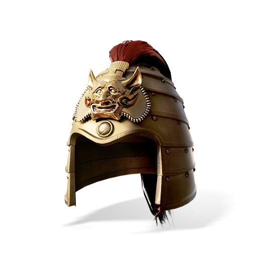
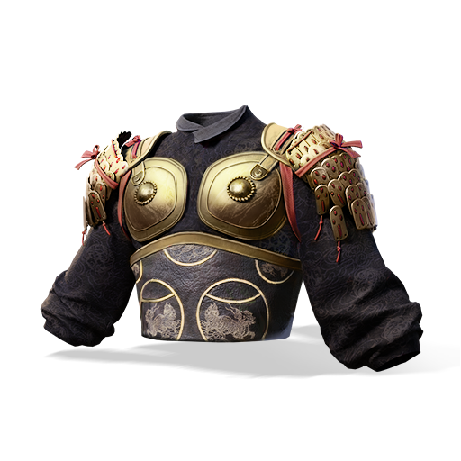
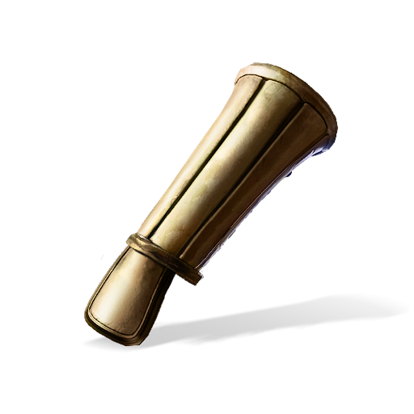
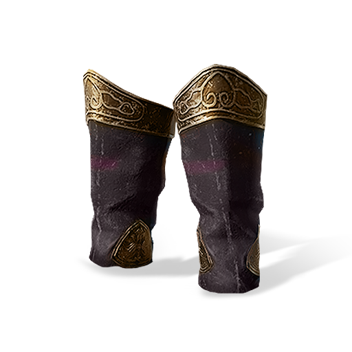
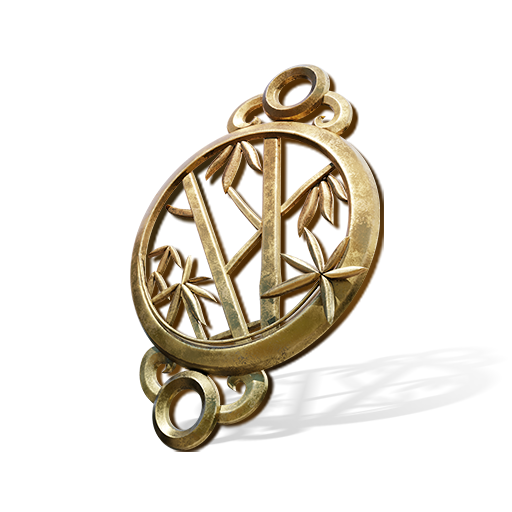
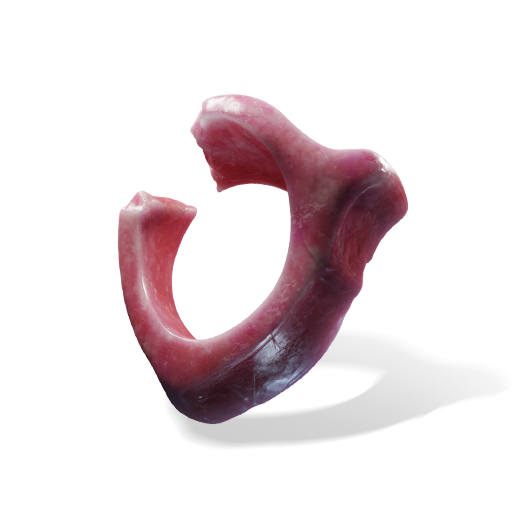
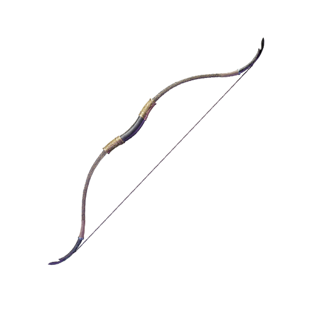

Forgez Votre Arsenal
Chaque emplacement compte. Comparez les stats, suivez les bonus de set et trouvez l'equipement qui maximise votre potentiel de combat.

CasquePV Max · Defense
ArmureDefense · Resistance
BrassardsAttaque · Taux Critique
JambieresDefense · PV Max
AnneauDegats Crit · Pen
AccessoireAffinite · Elementaire
ArcAttaque a DistanceFonctionnalites
Chaque stat, chaque modificateur, chaque rotation, calcules avec une precision mathematique basee sur les vraies formules de combat du jeu.
DPS complet base sur la rotation avec coups critiques, affinite et 10 zones de degats multiplicatives. Timing au frame pres.
Comparaison cote a cote avec deltas de stats en direct. Voyez l'impact du changement d'une seule piece sur tout votre build.
Analyse approfondie de chaque modificateur : attaque de base, taux critique, degats critiques, affinite, penetration, le tout visualise.
Notation automatique de E a SSS basee sur l'efficacite des stats. Sachez exactement ou progresser.
Integration complete des bonus de Voies Internes (内功) et des Arts Mystiques. Mesurez l'impact de chaque voie sur vos degats.
Lexique complet en chinois, anglais et francais pour que chaque terme corresponde a votre client de jeu.
Simulation Avancee
Des milliers de cycles de combat simules pour trouver le DPS reel de votre build. Pas une simple formule, mais la realite statistique.
Couche Intelligente
Laissez le machine learning guider votre progression, des ameliorations d'equipement aux refontes completes de build.
L'IA analyse vos stats actuelles et propose la piece optimale pour chaque emplacement, classee par gain marginal de DPS.
Identifie le goulot d'etranglement de votre build, que ce soit le plafond de critique, le seuil de penetration ou les rendements decroissants d'affinite, puis indique ou chaque point compte le plus.
Propose l'enchainement de competences au DPS le plus eleve en analysant les cancels d'animation, les fenetres de buffs et l'alignement des cooldowns sur des milliers de runs Monte Carlo.
40+ Techniques Martiales
Chaque Art Mystique integre avec ses coefficients de degats et son suivi de buffs.
Apercu de l'Interface
Une interface qui rend hommage a l'esthetique du jeu : encre, or et esprit des arts martiaux.
Technologies
Stack de production optimise pour la performance, la surete de typage et l'experience developpeur.
Devenir plus fort, devenir un maitre.
MoonKnights
Projet de Guilde WWM
Rejoignez le Jianghu
Que vous soyez un epeeiste solitaire ou un stratege de guilde, ce calculateur est votre voie vers la perfection martiale.